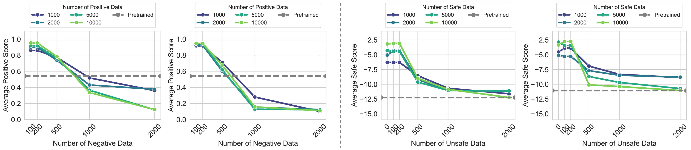
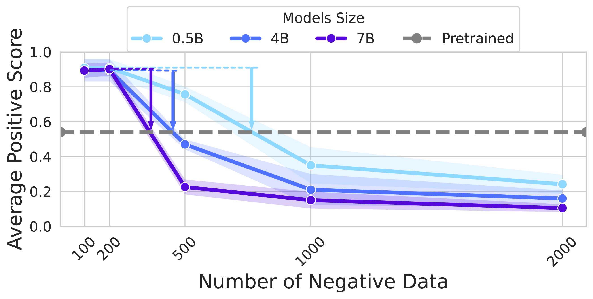
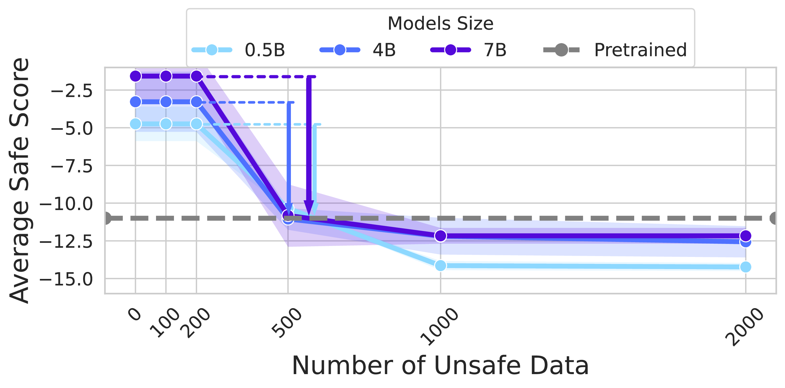
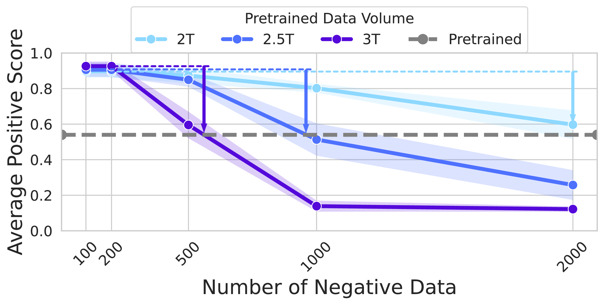
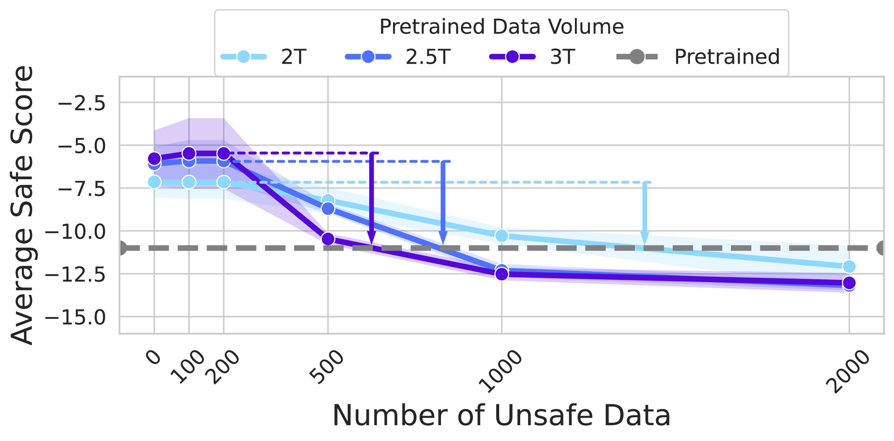

Language Models Resist Alignment: Evidence From Data Compression
Peking University
TL;DR: We demonstrate the elasticity of post-alignment models, forming resistance to alignment.

Visual demonstration of language model resistance to alignment
Key Finding: The Elasticity of Language Models
Language models exhibit elasticity - an inherent tendency to retain original distributions and resist alignment modifications. This phenomenon encompasses:
- Resistance: Pre-trained models tend to maintain their original distribution
- Rebound: The deeper the alignment, the faster models return to pre-training distribution under reverse fine-tuning
Overview
Large language models (LLMs) may exhibit unintended or undesirable behaviors. Recent works have concentrated on aligning LLMs to mitigate harmful outputs. Despite these efforts, some anomalies indicate that even a well-conducted alignment process can be easily circumvented, whether intentionally or accidentally. Does alignment fine-tuning yield have robust effects on models, or are its impacts merely superficial? In this work, we make the first exploration of this phenomenon from both theoretical and empirical perspectives. Empirically, we demonstrate the elasticity of post-alignment models, i.e., the tendency to revert to the behavior distribution formed during the pre-training phase upon further fine-tuning. Leveraging compression theory, we formally deduce that fine-tuning disproportionately undermines alignment relative to pre-training, potentially by orders of magnitude. We validate the presence of elasticity through experiments on models of varying types and scales. Specifically, we find that model performance declines rapidly before reverting to the pre-training distribution, after which the rate of decline drops significantly. Furthermore, we further reveal that elasticity positively correlates with the increased model size and the expansion of pre-training data. Our findings underscore the need to address the inherent elasticity of LLMs to mitigate their resistance to alignment.
Contributions:
- Phenomenon: we uncover that language models exhibit elasticity. It encompasses resistance: pre-trained models tend to retain their original distribution; and rebound: the deeper alignment of models, the faster they return to the pre-trained distribution under reverse finetuning. Moreover, The model's change in compression rates \(\Delta \gamma_{p_\mathbf{\theta}}^{\mathcal{D}_i/\mathcal{D}}\) across different datasets is inversely proportional to their sizes \(|\mathcal{D}_i|\), which is analogous to the deformation behavior of a series of springs.
- Mechanism: We systematically model the training and alignment process of language models through compression theorem. We elaborate on the compression protocol of language models to explore their training and alignment processes, laying a foundation for subsequent research on elasticity.
- Validation: We experimentally observe consistent resistance and rebound phenomena across various LLMs. This highlights the universality of elasticity and the need for systematic approaches to achieve robust and deep alignment.
Theoretical Framework
Our theoretical analysis builds upon compression theory to formally characterize the elasticity phenomenon in language models. Below are the key definitions and theorems that form the foundation of our work.
Definition 1: Token Tree 𝒯
For a dataset \(\mathcal{D} = \{ \mathbf{z}_{i} \in \{0|1\}^{\infty} \mid i = 1,2, \cdots \}\), the token tree of \(\mathcal{D}\), denoted as \(\mathcal{T}_{\mathcal{D}}\), is defined as follows: each node has child nodes labeled 0 or 1, along with an end-of-sequence (EOS) leaf node. The path from the root to a leaf node defines each response \(\mathbf{z}_{i}\), with the corresponding EOS node weight representing the response's probability while the weight of non-leaf nodes is the sum of the weights of their child nodes.
Definition 2: The Compression Protocol
Consider using the model \(p_{\mathbf{\theta}}\left(\cdot\right)\) to compress the dataset \(\mathcal{D}\). The compression protocol is defined in two steps:
- Prune the token tree of \(\mathcal{D}\), retaining only the top \(d\) layers.
- Apply Huffman coding to compress the pruned token tree. Each response from the root node to a leaf node is treated as a symbol in the Huffman coding alphabet, and the weight of the leaf node is the probability of the symbol.
Theorem 1: Ideal Code Length
Consider a finite parameter model \(p_{\mathbf{\theta}}\left(\cdot\right)\) training on dataset \(\mathcal{D}\), the ideal code length \(\mathcal{L}_{p_{\mathbf{\theta}}}\left(\mathbf{x}\right)\) of a random response \(\mathbf{x}\) compressed by \(p_{\mathbf{\theta}}\) can be expressed as:
where \(d\) represents the depth of the \(\mathcal{T}_{\mathcal{D}}\) after pruning and \(p_{lj}\) represents the probability values of the leaf nodes for the \(j\)-th node at the \(l\)-th layer.
Definition 3: Inverse Alignment
Given a language model \(p_{\mathbf{\theta}_0}\), aligned on dataset \(\mathcal{D}_{a}\) to produce the aligned model \(p_{\mathbf{\theta}_1}\). For any \(\epsilon > 0\), if applying a dataset \(\mathcal{D}_{b}\) (where \(|\mathcal{D}_{b}| \ll |\mathcal{D}_{a}|\)) to \(p_{\mathbf{\theta}_1}\) yields \(p_{\mathbf{\theta}_0^{\prime}}\) such that \(\rho(p_{\mathbf{\theta}_0^{\prime}}, p_{\mathbf{\theta}_0}) \leq \epsilon\) for a given eval metric \(\rho\), we define the transition from \(p_{\mathbf{\theta}_1}\) back to \(p_{\mathbf{\theta}_0^{\prime}}\) as inverse alignment.
Definition 4: The Elasticity of LLMs
Consider a language model \(p_{\mathbf{\theta}_0}\) and transformation \(p_{\mathbf{\theta}_0} \xmapsto{f(\mathcal{D}_a)} p_{\mathbf{\theta}_1}\), elasticity is said to exist in \(\left(p_{\mathbf{\theta}_0},\mathcal{D}_a\right)\) if there is an algorithmically simple inverse operation \(g\) and a dataset \(\mathcal{D}_b\) such that \(|\mathcal{D}_b| \ll |\mathcal{D}_a|\), with the property that:
where \(\epsilon_0\) is a constant.
Definition 5: Normalized Compression Rate
For \(N\) pairwise disjoint datasets \(\mathcal{D}_{1}, \cdots, \mathcal{D}_{N}\) and a parameter model \(p_{\mathbf{\theta}}\) compressing \(\mathcal{D}=\bigcup_{i=1}^{N}\mathcal{D}_{i}\), the normalized compression rate \(\gamma_{p_{\mathbf{\theta}}}^{\mathcal{D}_{i}/\mathcal{D}}\) for a particular dataset \(\mathcal{D}_{i}\) is defined as:
where \(M\) is the number of leaf nodes of the pruned tree \(\mathcal{T}_{i}^{\prime}\) of dataset \(\mathcal{D}_{i}\).
Theorem 2: Elasticity of Language Models
Consider the pre-training dataset \(\mathcal{D}_p = \bigcup_{i=1}^{3}\mathcal{D}_{i}\), the alignment dataset \(\mathcal{D}_a\), and the perturbation dataset \(\mathcal{D}_t\), with the model \(p_{\boldsymbol{\theta}}(\cdot)\) trained on \(\mathcal{D}=\mathcal{D}_{p} \cup \mathcal{D}_{a} \cup \mathcal{D}_{t}\). Assume that \(\mathcal{D}_a \overset{d}{\sim} \mathcal{D}_{2}\), \(\mathcal{D}_t \overset{d}{\sim} \mathcal{D}_{3}\), and \(\mathcal{D}_{1},\mathcal{D}_{2},\mathcal{D}_{3}\) are each distributed according to a Pareto mass distribution. As the perturbation data volume \(|\mathcal{D}_t|\) varies, \(\gamma_{p_{\boldsymbol{\theta}}}^{\mathcal{D}_p/\mathcal{D}}\) and \(\gamma_{p_{\boldsymbol{\theta}}}^{\mathcal{D}_a/\mathcal{D}}\) satisfy:
where \(l = \frac{|\mathcal{D}_t|}{|\mathcal{D}_a|} \ll 1\), \(k = \frac{|\mathcal{D}_p|}{|\mathcal{D}_a|} \gg 1\), and \(\{\mathcal{D}_{i}\}_{i=1}^3\) are datasets of equal cardinality.
🔍 Interactive Proofs
Click on the "View Proof" or "View Details" buttons to explore the theoretical foundations of language model elasticity.
Experimental Validation
1. Evidence of Resistance Phenomenon
| Datasets | Base Models | Training Loss Comparison | ||
|---|---|---|---|---|
| θ₂ → θ₁ vs. θ₁ → θ₂ | θ₃ → θ₂ vs. θ₂ → θ₃ | θ₃ → θ₁ vs. θ₁ → θ₃ | ||
| Alpaca | Llama2-7B | 0.1589 ↓ 0.2018 ↑ | 0.1953 ↓ 0.2143 ↑ | 0.1666 ↓ 0.2346 ↑ |
| Llama2-13B | 0.1772 ↓ 0.1958 ↑ | 0.2149 ↓ 0.2408 ↑ | 0.1835 ↓ 0.2345 ↑ | |
| Llama3-8B | 0.2540 ↓ 0.2573 ↑ | 0.2268 ↓ 0.3229 ↑ | 0.2341 ↓ 0.2589 ↑ | |
| TruthfulQA | Llama2-7B | 0.1909 ↓ 0.2069 ↑ | 0.1719 ↓ 0.1721 ↑ | 0.2011 ↓ 0.2542 ↑ |
| Llama2-13B | 0.1704 ↓ 0.1830 ↑ | 0.1544 ↓ 0.1640 ↑ | 0.1825 ↓ 0.2429 ↑ | |
| Llama3-8B | 0.2118 ↓ 0.2256 ↑ | 0.2100 ↓ 0.2173 ↑ | 0.2393 ↓ 0.2898 ↑ | |
| BeaverTails | Llama2-7B | 0.2730 ↓ 0.2809 ↑ | 0.2654 ↓ 0.2691 ↑ | 0.2845 ↓ 0.2883 ↑ |
| Llama2-13B | 0.2419 ↓ 0.2439 ↑ | 0.2320 ↓ 0.2327 ↑ | 0.2464 ↓ 0.2606 ↑ | |
| Llama3-8B | 0.2097 ↓ 0.2156 ↑ | 0.2008 ↓ 0.2427 ↑ | 0.2277 ↓ 0.2709 ↑ | |
2. Evidence of Rebound Phenomenon
IMDb Sentiment Task
Models with more positive training show faster performance decline under negative fine-tuning
Safety Alignment Task
Similar rebound patterns observed in safety-related alignment tasks
3. Factors Affecting Rebound Strength
3.1 Model Size Impact
IMDb Task - Model Scaling
0.5B → 4B → 7B parameter models show increasing rebound strength
Safety Task - Model Scaling
Consistent scaling behavior across different alignment objectives
3.2 Pre-training Data Volume Impact
IMDb Task - Data Scaling
2.0T → 2.5T → 3.0T pre-training data shows increasing rebound
Safety Task - Data Scaling
Larger pre-training datasets amplify resistance to alignment
Key Experimental Insights
- Universal Phenomenon: Resistance and rebound effects are observed consistently across different models (Llama2-7B/13B, Llama3-8B, Gemma-2B, Qwen series) and tasks
- Scaling Behavior: Both model size and pre-training data volume positively correlate with elasticity strength
- Algorithmic Independence: The phenomenon persists across different alignment methods (SFT, RLHF, DPO, KTO, SimPO)
- Practical Implications: Even minimal negative fine-tuning can rapidly undo extensive positive alignment
Broader Impact
- Alignment Fragility: Current fine-tuning methods may only achieve superficial modifications
- Open-source Risks: Advanced inverse alignment techniques could compromise even well-aligned models
- Research Directions: Need for more robust alignment methods that achieve deeper, more persistent modifications
Citation
@article{ji2024language,
title={Language models resist alignment},
author={Ji, Jiaming and Wang, Kaile and Qiu, Tianyi and Chen, Boyuan and Zhou, Jiayi and Li, Changye and Lou, Hantao and Yang, Yaodong},
journal={arXiv preprint arXiv:2406.06144},
year={2024}
}